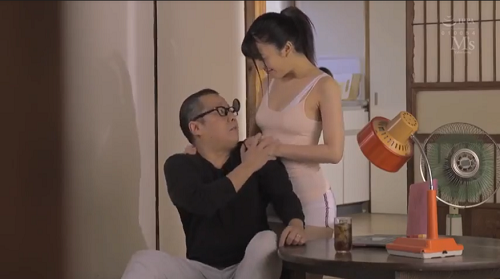

Trong thế giới nhân loại,tình yêu thì ai cũng biết,nhưng thực hiện thì khó chết con đĩ mẹ! Mỗi ngày không biết bao nhiêu người nhân danh đủ thứ chủ nghĩa chỉ để giết nhau.Vì tiền giết nhau,vì tình giết nhau,nhân danh Tôn giáo giết nhau.Cuối cùng xúm nhau chết một cách ngu xuẩn. Tui chỉ thích kể chuyện thú vị hơn là chuyện : tình yêu,tình dục con người trần tục, như chuyện vợ chồng thằng Mễ hàng xóm. Bởi vì tụi tui đang ở Mỹ.
Bà xã tui có một thân hình như người mẫu đẫy đà vú bự .Vú một vú. Đít một đít. Thằng nào nhìn thấy cũng thèm thấy mụ nội! Sau khi sanh con xong bả còn bự ra thêm nữa.Có lần tui tá hỏa tam tinh khi thấy con cặc giả trong tủ điểm trang của bả. Con cặc có gắn bin ngọ ngoậy. Tui tức hỏi bả “ Bộ tui đụ bà không sướng hả?” Bả nguýt tui rồi phang ngang: “Biết còn hỏi!” nguẩy đít bỏ đi. Thiệt ra tui đụ rất dở. Leo lên chưa vài giây là tui ra mẹ nó rồi.
Ở Mỹ, nhà tui cách nhà vợ chồng thằng Mễ một hàng rào cây. Nếu cắt cỏ vạch lá thì có thể nhìn thấy nhau. Tuy xa mà gần. Thằng Mễ to con như trâu, đen đúa nhưng đẹp trai. Con vợ thì hơi mập, đít bự.Tụi nó mê chã gìo của vợ tui. Lâu lâu tụi nó cũng cho tụi tui cơm xào với đậu. Mễ ăn cái gì cũng đậu. Nghe mùi là tui ớn.Nhưng nói nào ngay ở gần mấy thằng da màu dễ chịu. Cần cái gì là thằng Mễ vui vẻ làm liền.

Một đêm cuối tuần không ngủ được tui ra sân sau hóng mát nhìn trăng. Bỗng nghe tiếng ú ớ bên nhà thằng Mễ. Tưởng chuyện gì tôi vạch lá nhìn qua.Tui chửng hửng thấy vợ chồng thằng Mễ bày trò đụ đéo lộ thiên ngoài chổ bàn picnic. Vì không xa nên nhìn rất rõ. Con vợ đang bú cặc thằng chồng. Thằng Mễ người trần truồng như tượng đồng đang ưỡn người cho con vợ bú.Tui chưa bao giờ thấy con cặc to lớn như vậy,trừ trường hợp coi phim sex.Con vợ vừa mút vừa xuột,thằng chồng sướng rên hừ hự.Chợt tui nghe hơi thở sau lưng,quây lại,vợ tui cũng đang hé mắt nhìn đứng sát bên tui.Tui ra dấu đưa ngón tay lên miệng.Hai vợ chồng tui đang coi phim sex miễn phí.Con vợ thằng Mễ bú một hồi,thằng chồng đẩy con vợ nằm xuống,trên tấm nệm dã chiến cắm trại.Hắn lột truồng con vợ bú lồn.Con vợ sướng quá rên rĩ quằn quại như con giun.Lát sau tụi nó đụ nhau.Tui bắt đầu mệt vì thằng Mễ đụ dai quá.Làm như nó có thể ở trên bụng mụ ta suốt ngày không bằng.Vợ thằng Mễ sướng quá rên to nó càng đụ tợn.Vợ tui bất chợt thò tay vào vọc cặc tui.Tui quây lại thò tay vào lồn của bả.Nói thiệt chưa bao giờ tui thấy lồn bả ướt như vậy,ướt cả quần xì líp.Cơn sướng bật lên tui xuất tinh ướt quần ướt tay của bả.Tui tỉu nghỉu quây lưng vào nhà.Vợ tui vẫn còn đứng nấn ná nhìn qua nhà thằng Mễ, tay bả mò xuống lồn.Lần nầy tui nghĩ bà xã tui chắc phải tìm con cặc giã.
Tui làm ca chiều,vợ tui làm ca sáng,tụi tui như mặt trời mặt trăng.Nhiều khi tui muốn xin hãng đổi ca nhưng chưa được.Cứ sáu giờ sáng là bả đi mất,khi bả về là tui đã ra khỏi nhà cho tới khuya mới mò về nhà.
Vừa thức dậy tắm rửa xong thì nghe chuông cửa reng.Ra mở cửa ngạc nhiên thấy con vợ thằng Mễ.
“Bộ mầy không đi làm hả?”Tui hỏi.
“Không,tao hôm nay xin nghĩ”
“Bộ mầy bịnh hả?”
“Không, tao bận việc”
Tui nhìn nó.
“Mầy cần gì không?”
“Không! biết mầy làm chiều,tao qua đây chơi”
Vợ thằng Mễ vào nhà,tui lại tủ lạnh lấy hai chai bia,đưa nó một chai xong tui tìm đồ nhậu.Tui để ý thấy con nhỏ Mễ mặc cái quần jeans bó cứng hấp dẫn.Cái đít nó không thua gì bà xã tui.Tụi tui đá tưng tửng vài chai bia, con nhỏ Mễ bỗng đứng lên chỉ vào hạ bộ nó nói tỉnh queo:
“Mầy muốn đụ không?”
Cặc tui nứng tức thì,khi nghĩ lại cảnh vợ chồng nó đụ đéo.Tiếng Anh của tui với nó cỡ ngang nhau,quơ tay nhiều hơn nói,nhưng không hiểu sao tụi tui hiểu nhau hết trơn. (Truyện từ CõiThiênThai.com) Vợ thằng Mễ bú cặc hết sẫy.Tui cũng ráng chứ không bắn khí vào mặt nó.Lột được cái quần jeans nó ra thấy cái lồn Mễ chằm dằm trước mặt thiệt đã.Tui gồng mình bú mớm và đút cặc vào chừng vài phút phù du là tui sướng quá la to bắn khí.Tui biết nó chưa đã.Nhưng có còn hơn không.Con Mễ nói nào ngay thật hiền lành.Nó vui vẻ lau cặc tui sạch trơn.Trước khi ra về nó còn cám ơn tui mu chô mu chồ gì đó,rồi còn nói mầy muốn Chố Chà thì nó qua.Tui biết cặc tui không bằng nữa thằng chồng nó,nhưng đàn bà nó thích thì nhỏ to cũng ok.
Bửa hôm nhà tui picnic thiệt vui.Vợ chồng thằng Mễ. Thằng con nó với thằng con tui cũng trạc tuổi với nhau.Còn thêm dăm ba gia đình bạn Việt nam.Tụi tui nhậu bí tỉ cho tới tối.Mọi người đều thích vợ chồng thằng Mễ hàng xóm của tui.Khi mọi người ra về chỉ còn vợ chồng thằng Mễ ở lại dọn dẹp.Tui tá quả tam tinh khi thằng Mễ trong góc riêng hắn nói hắn biết tui đụ vợ nó.Giống như thằng ăn cắp bị bắt qủa tang,tui ú ớ chối lẩy bẩy thì hắn móc tấm hình trong diiện thoại di dộng cho tui coi.Rõ ràng trong hình tui đang chơi vợ nó.Hình chụp tuy mờ nhưng không cãi vào đâu được.Tui hoãng hồn nhìn mặt nó coi phản ứng.Thấy gương mặt nó bình thường tui yên tâm.Trong nhà con vợ hắn và vợ tui cũng vui vẽ dọn dẹp.Thằng Mễ giúp tui thu dọn bia rượu.Tửu lượng hắn thuộc loại cừ khôi nên tay vẫn còn cầm bia tu bạo.Tui bồn chồn lo lắng không yên với bức hình khốn nạn kia trong điện thoại di động của nó.Nhưng tui vẫn thấy hắn bình thản vui vẽ như thường.Sau khi dọn dẹp tui tui chụm lại trên bàn ăn chơi tiếp.Thằng nhỏ con nhà tui theo con thằng Mễ qua nhà nó chơi game. Vợ tui vui như tết.Với chiếc váy mềm mại mùa hè mới thay từ trên lầu xuống tui thấy bà vợ tui có ý khoe của nên phần ngực no tròn của bả trể xuống một nữa.Đôi mắt thằng Mễ cứ chiếu ngay nơi rảnh làm tui muốn nỗi nóng.Nhưng bức hình làm tui bị ám ảnh.Cơn ghen dịu xuống.Con vợ thằng Mễ thì xí xô xí xào,nó tự nhiên ôm tui giỡn hớt như người nhà.Phần lo thằng Mễ tui cứ đẩy nó ra,nhưng nó cứ rày rà coi như pha.Uống bia nhiều tui bắt đầu quờ quạng.Bên kia thằng Mễ đứng dậy đụng rượu với bà xã tui.Tối nầy, giống như bả cũng chơi xã láng uống tới chỉ.Thằng Mễ bỗng gọi điện thoại về nhà hắn noí với thằng con,xong hắn kéo bà xã tui đứng dậy.Trời ạ! Hai đứa lại mở nhạc rồi ôm nhau nhảy đầm.Tui không thể ngờ,và không bao giờ ngờ trong cơn say tui thấy tụi nó hun nhau.Trời đất!Con vợ thằng Mễ cũng xì xào tiếng Mễ với chồng,đã không có vẽ ghen mà như đồng loã.Tui như người mộng du trong cõi quái gỡ,lúc tỉnh lúc mơ,cho đến khi cố nhướng mắt ráng nhìn thằng Mễ đè bà xã tui xuống kéo pheng cái quần lót ra.Tiếng rên rĩ râm rang.Trước khi gục xuống tôi thoáng nghĩ chắc mình nó hai bà.
Hôm sau thức giấc, trời sáng bửng,tui lấm lét nhìn quanh.Mắt trận miền Tây vẫn yên tỉnh.Nhà cửa sạch sẽ.Vợ chồng thằng Mễ đâu mất.Vợ tui từ trên lầu đi xuống,không có một nét lạ nào.Bả vẫn vui vẽ,kéo tui dậy ăn sáng.Bả nói hôm qua vui quá.Tui nhìn bả để tìm một câu hỏi.Bất chợt bả cười nhìn tui nói:
“Thôi ông,chuyện qua cho qua luôn.Tui nhìn thấy tấm hình ông với con vợ thằng Mễ rồi!”
Tui chửng hửng tịt ngòi tắt tị.Tui im re lãng sang chuyện khác.Vợ tui cười bỗng bả sà xuống moi con cặc tui ra.Bả xuột một lúc cặc tui cương lên,bả đưa miệng mút .Tui thấy vợ tui càng ngày càng dâm tợn.Đít tui ngọ ngoạy,cặc tui bắt đầu sướng với cái lưỡi của bả.Tui rên lên nói:
“Trời! Bà làm hồi hôm chưa đã hả?”
Bỗng tui lấy trớn tiếp:
“Bà có bú cặc nó không?’
Vợ tui vừa mút vừa thở:
“Sao không! Cặc nào cũng cặc! bú sướng, nhưng đụ sướng hơn!”
Bả càng xuột mạnh,tui ưỡng người cơn sướng phát ra,giữ không được tui xịt vào mặt bả.Vợ tui buông ra lần lên ôm tui nói:
“Nhưng tui yêu ông,chịu không cha nội!”
Thời gian trôi qua,tui biết vợ tui mê hằng Mễ lắm rồi.Có lần tui đi làm nhưng không được khỏe tui về(Tui vẫn làm ca chiều) Buổi tối yên tỉnh nhưng trên phòng vợ chồng tui còn đèn.Tui se sẻ vào nhà lần lên lầu nghe tiếng rên rĩ,hé cửa nhìn vào thì thấy vợ tui đang ưỡn lồn cho thằng Mễ bú. Trời ơi! tui tức điên người,muốn lấy súng bắn cho chết đôi gian phu dâm phụ nhưng không dám (nhác mà!) Tò mò theo giỏi thì phải công nhận thằng Mễ bú lồn hết chê.Nó kê hai cái gối thật cao,dựa lưng vợ tui vào tấm nệm thành giường thoải mái,trong tư thế hai cái mu âm hộ nhô lên mở to mời mọc.Cứ thế là hắn bú,lưỡi hắn nhuần nhuyễn,vợ tui càng ngày càng chết điếng vì sướng,mắt mở trừng hết còn là lối,chỉ còn gào khan tay chân như người bị giật điện quơ quào lung tung.Tới lúc nó đụ mới là dễ sợ.Con cặc to của hắn tui nghĩ làm sao vợ tui chịu nỗi.Nhưng tui lầm,con cặc đi vào ngọt xớt,hắn fuck như người giả gạo liên tục nhịp nhàng.Tui lắc đầu chịu thua bỏ đi khi nghe tiếng vợ tui sướng la như gà cắt tiết,tui nghỉ hắn có fuck thêm một bà nữa thì cũng không sao với sức mạnh kinh khủng như vậy.
Vậy mà hắn chết.Vâng, thằng Mễ chết vì tai nạn.Vợ tui như người điên.Hôm đưa đám ma,con vợ hắn vợ tui đi sát nhau như tìm hơi ấm.Phần đông người ta tưởng như vợ chồng tui là người láng giềng tốt.Nhưng thật ra thì hai cái lồn đó nhớ cặc thằng Mễ nhiều hơn tui.Sau đám tang thời gian tui là thằng có lợi,tui đụ thoải mái hai cái lồn,nhưng mấy bà dâm cỡ đó thì tui cũng chĩ trám chổ cho có mà thôi.Có điều tui không bao giờ hiểu là một cái lồn Việt một cái lồn Mễ theo tui cho đến cuối đời mới lạ.Số là sau khi chồng chết,con vợ thằng Mễ lảnh tiền tử trả hết tiền nhà xe cộ.Nó không đi đâu chỉ ở đó cho đến bây giờ.Hai thằng con tụi tui cũng đã lớn,năm nữa là ra trường trung học.
Thằng José con thằng Mễ thì nhà tui hay nhà nó cũng giống nhau.Từ lúc ba nó chết thì nó coi nhà tui cũng như nhà nó.Một tối nó qua rũ thằng Hai, con tui đi đánh bi da.Thằng Hai lại đi đâu mất chỉ có vợ tui tắm xong vừa mới ra.Cái chuyện là vợ tui lại mặc đồ hết sức khiêu gợi.Thế là thằng nhỏ cứ làm như thân quen lại ôm ôm rớ rớ.Lửa gần rơm thế nào không cháy.Vợ tui vô tình lại chạm con cặc cương cứng của nó.Hổ phụ sanh hổ tử.Nó lại cao lớn trắng trủa đẹp trai hơn ba nó.Với tài mút lưỡi tuyệt dịu vợ tui chịu sao thấu.Hai cái miệng dính chặt khi tay nó thò xuống mò lồn, khi đó đã ướt nhẹp của vợ tui.Vự tui rên ư hử bắt đầu sướng.Thằng nhỏ đầu có thua gì bố nó.Cặc nó có phần hùng dũng hơn bố nó khi nằm gọn ơ trong âm hộ của vợ tui.Nước nôi đầy đủ cứ thế mà nó phang.Sung sướng vỡ bờ,vợ tui sãng ngất từng cơn.Nhưng hai người đầu biết bên nhà con Mễ thằng Hai nhà tui cũng đang bú lồn con mẹ Mễ, nó đang la that thanh vì sướng.Thằng con tui trời cho của quí bự mà lại dâm như má nó thì đúng là con nào má nấy. Tui biết ngay bây giờ tui ra rìa.Nhưng tui đã nói từ đầu:Tui thích tình yêu đụ đéo,tui không thích nhân danh gì gì để giết nhau.Chết rồi thì còn con mẹ gì nữa.Hở Giời!.
Thằng José khác với ba nó,là ba nó thích lồn không lông nên có lần vợ tui cạo sạch nhẵn.Lồn vợ tui thuốc loại to nhưng vun vắn cao mếp không bề xề thịt dư.Con thằng Mễ con lại thích có lông xum xoe nên vợ tui lại để lông.Nhưng lông của bả nhiều nhưng không rậm, xoắn lại rất khiêu gợi.Còn lông con mẹ Mễ thì quắn tít.Có lần tui nhìn thấy cạo sạch nhẵn,chắc taị thằng Hai thích vậy.Sau nầy tui còn biết thêm vợ tui thích kiểu chơi Doggie style (kiểu chó đụ) mà thằng nhóc josé lại mê.Có lần vô tình tui thấy tụi nó chơi kiểu chó,vừa đụ tay nó vỗ bếp bếp vào mông bả coi hót vô cùng.Còn thêm nữa là thích chơi bạo.Tuổi trẻ mà!Dù ở party hay trong nhà, mặc đồ dạ hội hay quần jeans,nó mà thấy vợ tui hấp dẫn là nứng cặc,thế nào nó cũng tìm cách mò lồn bả cho được.Mà bả lại thích kiểu đó mới chết chớ.Giống như cái lồn ướt át của bả lúc nào cũng sẵn sàng chờ bàn tay hay con cặc của nó. Có lần trong party nhảy đầm tui thấy ở góc tối hắn đè sát bả vào tường tay móc lồn,mặt bả sướng lên thấy rõ. Sau nầy hai bà Việt Mễ trông trẻ trung hấp dẫn và đẹp hẵn ra.Tôi nghĩ chắc là được đụ nhiều.Hổng biết lúc tụi nhỏ có vợ rồi ra sao,chứ bây giờ tui thấy người naò cũng hớn hở tươi mát.
Chuyện của tui kết thúc trong hoà bình.Trong đời tui nghĩ chỉ có bốn cái quan trong nhất: Tiền bạc, sức khoẻ,quyền lực và đụ đéo.Cái nào cũng sướng, nhưng cái đụ là sướng nhất.
Hết